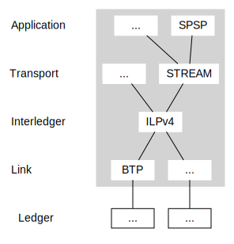

Interledger Architecture
Interledger provides for secure payments across multiple assets on different ledgers. The architecture consists of a conceptual model for interledger payments, a mechanism for securing payments, and a suite of protocols that implement this design.
The Interledger Protocol (ILP) is the core of the Interledger protocol suite.
Colloquially, the whole Interledger stack is sometimes referred to as "ILP". Technically, however, the Interledger Protocol is only one layer in the stack.
The Interledger architecture is heavily inspired by the Internet architecture described in RFC 1122, RFC 1123 and RFC 1009.
Interledger Model

Connectors
A connector is a system that provides the service of forwarding Interledger packets towards the destination provided in the packet. Packets are forwarded across connections (called accounts) between senders, connectors and receivers.
Interledger packets describe amounts of money, which may be settled individually or in aggregate through various kinds of external payment systems collectively referred to as ledgers. Ledgers can include blockchains, but also banks, peer-to-peer payment schemes, automated clearing house (ACH), mobile money institutions and even central-bank operated real-time gross settlement (RTGS) systems among many other types. Some ledgers support very efficient settlement, while others support only slower forms. In general, the faster and cheaper the ledger, the more often an account is settled. See IL-RFC 22 for more information on different ledger types and settlement strategies. Settlement does not occur between the sender and receiver directly. Each connector settles only with its direct neighbors.
Connectors may generate revenue from Interledger payments by reducing the amount on each packet slightly before forwarding. Connectors may also convert an incoming packet denominated in one currency or asset type to an outgoing packet denominated in another currency or asset type.
Connectors accept some risk, which they must consider when deciding their business model. See IL-RFC 18 for more details on the risks and their mitigations.
A single Interledger packet may traverse any number of connectors on its way to the destination. For efficiency reasons, each connector seeks to forward the packet on the shortest known path to the destination. See IL-RFC 10 for more information on routing in Interledger.
Senders
A sender is a system which sends Interledger packets in order to:
- Transfer value from itself to a receiver or
- Exchange value from one type to another.
When transferring value, the sender will first request payment details from the receiver, including the receiver's ILP address. Once it has those details, it will start sending Interledger packets using this ILP address as the destination. A large payment may be split into many smaller pieces and reassembled by the receiver. For more information on the overall payment process, see the section Interledger Protocol Suite.
A sender may also exchange assets by acting as both sender and receiver. In this case, it would send one asset and receive another, effectively exchanging one for the other.
Senders typically choose a connector and send all their traffic through this connector. If they are at any point dissatisfied with their connector, they may switch to a different one. Sophisticated senders may operate a connector of their own and maintain relationships with multiple connectors to minimize costs and maximize availability.
Receivers
A receiver is a system which accepts incoming Interledger packets and provides a cryptographic receipt for each packet which is returned to the sender along the same path. For more information on the cryptographic exchange, see Payment Flow.
Interledger ensures that senders' funds are safe throughout a multi-hop payment and cannot be stolen by faulty or malicious intermediaries (see Interledger Security).
The Interledger
The "Interledger protocol suite" can be used among any network of peered connectors, be it public or private. There is no single network that all parties must connect to to use these protocols.
"The Interledger" is the name of a public instance of the Interledger protocol suite which seeks to provide a coherent global financial infrastructure. Ideally, anyone connected to the Interledger should be able to transact with anyone else, each using their currency and connector of choice.
Interledger Security
Interledger uses conditional transfers to secure payments across multiple hops and even through untrusted connectors. Everyone only needs to trust their direct peers, no matter how many connectors are involved in forwarding a given packet. Connectors take some risk, but this risk can be managed and is primarily based upon the connector's chosen peers.
Hint: Conditional transfers or authorization holds are the financial equivalent of a two-phase commit.
Interledger Protocol Flow
The sender first sends an Interledger prepare packet. Each connector may either forward the prepare packet, or, in the case of an error, return a reject packet. If the prepare packet reaches the receiver, they may respond with either a fulfill or reject packet, depending on whether they wish to accept the Interledger payment. In either case, the resulting packet is passed along the same path back to the sender.
Each prepare packet contains a cryptographic condition and timeout. If a connector receives and forwards the fulfill packet before the timeout, the prepare packet is considered fulfilled, creating an obligation for the peer that sent the packet to settle with the connector. If the timeout is reached before the fulfill packet is received, the connector will consider the prepare packet expired and no obligation is created.
Inspired by the Lightning Network, Interledger uses the digest of the SHA-256 hash function as the condition for prepare packets. The fulfill packet contains a valid 32-byte preimage for the hash specified in the prepare packet. Connectors are responsible for validating fulfillments. Transport Layer protocols are used by the sender and receiver to generate the condition for a particular packet.
Settlement may either be based solely on trust between the connector and its peers, or be supported with functionality on the settlement ledger.
As the prepare packet makes its way to the receiver, connectors only reserve the appropriate amount of funds, they do not settle it yet. No obligation is agreed yet between the peers, so none can be lost if a connector fails or attempts to redirect the packet.
When the receiver receives the prepare packet, they return the fulfill packet to claim their funds. Each connector uses the same fulfill packet to claim their funds respectively from the party (sender or connector) that sent them the prepare packet.
When forwarding a prepare packet from the sender-side account to the receiver-side account, each connector will reduce the timeout by a fixed amount. This provides a fixed time window to pass back the fulfill packet from the receiver-side account to the sender-side account later. A connector must have a fair chance to pass the fulfill packet back before the timeout on the sender-side account is reached, even if the fulfill packet was received on the receiver-side account at the last possible moment. Otherwise, it would be obligated to pay out on the receiver-side account with no obligation on their counterparty on the sender-side account to pay them back.
For more details on the flow, see the ILPv4 specification.
Note: Interledger only supports Universal mode as described in the whitepaper. Atomic mode can be used by adjacent subsets of participants in an Interledger payment if desired, but this is not part of the standard.
Connector Risk and Mitigation
Interledger connectors accept some risk in exchange for the revenue they generate from facilitating payments. In the Interledger payment flow, connectors incur outgoing obligations on the receiver-side account, before they become entitled to incoming obligations on the sender-side account. After each connector receives a fulfill packet, they have a window of time to deliver the fulfill packet to their counterparty on the sender-side account. Connectors that fail to deliver the fulfill packet in time may lose money.
If some connectors in the path of an Interledger packet receive the fulfill packet in time and others don't, the receiver will know the packet was received but the sender will not know. Usually, a single Interledger packet is part of a larger transaction or payment stream, so the sender may find out what happened when they receive the response for the next packet. Senders MAY also retry packets that expire. The exact behavior of senders and receivers with respect to retries is defined by the transport layer. For an example, see IL-RFC 16 for a description of the Pre-Shared Key (PSK) transport layer protocol.
Failing to deliver the fulfill packet in time is the main risk connectors face and there are a number of additional strategies connectors should employ to mitigate and manage this risk. For more details, see IL-RFC 18.
Interledger Protocol Suite
The Interledger stack is separated into four layers:

Application Layer
The application layer is the top layer of the Interledger protocol suite. Protocols on this layer are responsible for:
- Destination account discovery
- Destination amount negotiation
- Transport protocol selection and communication of associated details, such as the shared secret or condition
- Additional details to be communicated in ILP packet data
An example of an application layer protocol is the Simple Payment Setup Protocol (SPSP). SPSP uses Webfinger (RFC 7033), an HTTPS-based protocol for communicating the destination ILP address and related details, and uses Pre-Shared Key (PSK) as the transport layer protocol.
Transport Layer
Transport layer protocols are end-to-end protocols used by the senders and receivers of Interledger payments to determine the payment condition and other details. The guarantees afforded to the sender vary depending on the type of transport protocol used.
There are currently two transport layer protocols:
-
In Pre-Shared Key (PSK) protocol, the sender and receiver use a shared secret to generate the payment condition, authenticate the ILP packet, and encrypt application data. Using PSK, the sender is guaranteed that fulfillment of their transfer indicates the receiver got the payment, provided that no one aside from the sender and receiver have the secret and the sender did not submit the fulfillment.
PSK is recommended for most use cases.
Interledger Payment Request (IPR)
In the Interledger Payment Request (IPR) protocol, the receiver generates the payment details and condition. The receiver does not share the secret used to generate the condition and fulfillment with the sender or anyone else, but the sender must ask the recipient to generate and share a condition before sending each payment. IPR is primarily useful for building non-repudiable application layer protocols, in which the sender's posession of the fulfillment proves to third parties that the sender has paid the receiver for a specific obligation.
Interledger Layer
The Interledger layer is responsible for forwarding Interledger packets between the sender and receiver. There is only one protocol on this layer: the Interledger Protocol (ILP).
The Interledger Protocol (ILP) is the core of the Interledger stack and defines standard address and packet formats that instruct connectors where to forward a packet. It also defines the protocol flow described above.
Interledger Addresses provide a universal way to address senders, receivers and connectors. Interledger addresses are hierarchical, dot-separated strings where the left-most segment is most significant. An example address might look like:
g.us.acmebank.acmecorp.sales.199 or g.crypto.bitcoin.1BvBMSEYstWetqTFn5Au4m4GFg7xJaNVN2.
When initiating an Interledger payment, the sender sends an ILP prepare packet to the connector. The packet is a binary message that includes the destination account, amount, condition, timeout, and transport-layer data for the receiver. The packet is relayed by connectors.
Ledger Layer
In order to move packets from one party (sender, receiver or connector) to another, the parties need a facility for data transmission and, optionally, money transmission for settlement. These facilities may be provided by different protocols belonging to the so-called ledger layer. Which protocol is used between two parties is up to those parties to choose.
See IL-RFC 17 for a full description of the ledger layer requirements.
Most implementations of Interledger use a plugin architecture to abstract the differences between different ledger layer protocols. For an example of this, see IL-RFC 4, which defines the interface for the Javascript implementation.